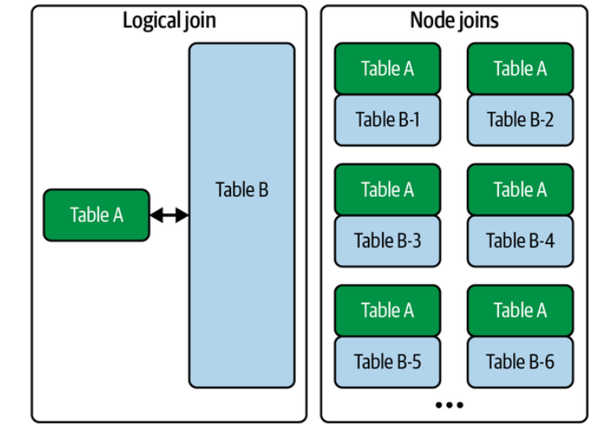
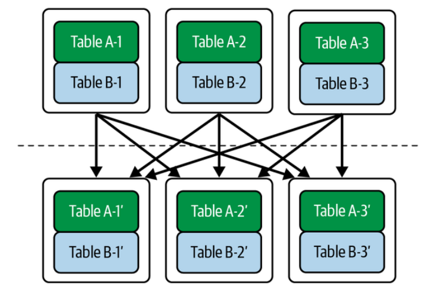

Transformation Layer: Joins
Joins
Local Joins (Single Machine)
Local joins assume:
both datasets exist on one machine
Example:
SELECT *
FROM orders o
JOIN users u
ON o.user_id = u.id
Example tables:
Orders
| order_id | user_id | price |
|---|---|---|
| 1 | 101 | 50 |
| 2 | 102 | 80 |
Users
| id | country |
|---|---|
| 101 | India |
| 102 | USA |
Result
| order_id | user_id | country | price |
|---|---|---|---|
| 1 | 101 | India | 50 |
Common Local Join Algorithms
Nested Loop Join
For each row in A, scan B.
for a in A:
for b in B:
if a.key == b.key:
emit(a,b)
Cost:
What is the time complexity?
Slow but simple.
Hash Join (most common)
Steps: - Build hash table for smaller table - Probe with larger table
Build phase
users_hash[user_id] = row
Probe phase
for order in orders:
lookup user
Complexity:
What is the time complexity?
Used by most databases.
Sort-Merge Join
Steps:
sort(A)
sort(B)
merge
Works well when data already sorted.
Used in: - column stores - large disk-based joins
Distributed Joins
In distributed systems:
orders → machine 1
users → machine 8
Matching keys might be on different machines.
Example:
orders partition
node1: user=1
node2: user=2
node3: user=3
users partition
node1: user=2
node2: user=1
node3: user=3
The system must move data across machines.
Network is expensive.
In distributed systems:
network cost >> compute cost
So the goal is:
minimize data movement
Distributed Join Strategies
There are three main strategies:
Broadcast join
Partitioned (shuffle) join
Locality-aware joins (pre-partitioned)
Broadcast Join (Replicated Join)

Idea:small table → send to every node
Example:
orders = 1TB
users = 1MB
Broadcast users everywhere.
Node1: orders partition + users copy
Node2: orders partition + users copy
Node3: orders partition + users copy
Then perform local hash join.
Diagram:
users (small)
|
-------------------------
| | |
Node1 Node2 Node3
orders1 orders2 orders3
Advantages:
-
very fast
-
avoids shuffle of big table
Disadvantages:
- only works when one table is small
Typical threshold:
< 100MB or < few GB
Systems that use this:
-
Spark
-
Presto
-
BigQuery
Partitioned (Shuffle) Join

Used when both tables are large.Idea:
partition both tables using join key
Example:
Join key = user_id
Partition rule:
partition = hash(user_id) % N
Step 1: Shuffle
Repartition both tables.
Before
orders
node1: user1,user4
node2: user2,user3
users
node1: user2,user4
node2: user1,user3
After shuffle
node1: user1,user3
node2: user2,user4
Now each node has matching keys locally.
Step 2: Local Join
Each node performs local hash join.
Diagram
orders ----\
→ shuffle → partition → join
users -----/
Advantages:
- works for large tables
Disadvantages:
-
heavy network cost
-
shuffle is often the most expensive step in Spark jobs
Pre-Partitioned Join (Colocated Join)
If datasets are already partitioned by the join key, no shuffle is needed.
Example:
Both tables partitioned by user_id.
Node1
orders(user1,user4)
users(user1,user4)
Node2
orders(user2,user3)
users(user2,user3)
Join becomes purely local.
Benefits:
no network
Used in:
-
distributed databases
-
Kafka stream processing
-
materialized views
Semi Join (Optimization)
Sometimes you don't need full rows.
Example:
orders JOIN users
But only to check if user exists.
Instead:
send only keys
Steps:
extract user_ids from users
send keys to orders
filter orders
Reduces network traffic.
The Real Cost Model
Distributed systems try to minimize:
Network transfer
Shuffle size
Disk spill
Rough cost ranking:
local join cheapest
broadcast join
shuffle join most expensive
Real Systems
Spark
Broadcast Hash Join
Shuffle Hash Join
Sort Merge Join
BigQuery
broadcast joins
distributed shuffle joins
Presto / Trino
replicated join
partitioned join
Mental Model
Local joins = algorithm problem
Distributed joins = network problem
Transformation patterns
- How do we update existing records?
- How do we remove records?
- How do we change schema without breaking pipelines?
Big Idea: Mutable vs Immutable Data
Traditional databases assume:
records can be updated in-place
Example:
UPDATE users
SET country = 'India'
WHERE id = 101
But many modern data systems prefer immutable data.
Instead of changing rows:
append new records representing changes
Example log:
| id | country | version |
|---|---|---|
| 101 | USA | 1 |
| 101 | India | 2 |
Latest version wins.
Update Patterns
There are three common update strategies in data systems.
1. In-place updates
2. Append-only updates
3. Upserts / Merge updates
In-place Updates
This is the traditional database model. Example:
old row overwritten
Before
| id | country |
|---|---|
| 101 | USA |
After
| id | country |
|---|---|
| 101 | India |
Characteristics
- simple
- efficient for OLTP systems
- harder to audit history
Used in: - PostgreSQL - MySQL - transactional databases
Problem for analytics:
history disappears
Append-only Updates
Modern data pipelines often use append-only logs.
Instead of modifying data:
new version is appended
Example:
| id | country | timestamp |
|---|---|---|
| 101 | USA | 10:00 |
| 101 | India | 12:00 |
Queries use:
latest record
Advantages
- immutable
- reproducible pipelines
- easy lineage
Disadvantages - more storage - requires compaction
Used in: - event streams - data lakes - CDC pipelines
Upserts (Merge Updates)
Upsert means:
update if exists
insert if not
Example SQL:
MERGE INTO users t
USING updates s
ON t.id = s.id
WHEN MATCHED THEN UPDATE
WHEN NOT MATCHED THEN INSERT
Common in data warehouses:
- Snowflake
- BigQuery
- Delta Lake
Used heavily in:
incremental transformations
Example pipeline:
new_orders → merge into fact_orders
Slowly Changing Dimensions (Important Pattern)
In analytics, updates often follow SCD patterns. Common types:
Type 1
Overwrite value.
USA → India
History lost.
Type 2
Create new row with version.
Example:
| user | country | start | end |
|---|---|---|---|
| 101 | USA | 2022 | 2024 |
| 101 | India | 2024 | null |
History preserved.
Very common in data warehouses.
Delete Patterns
Deletes are also tricky in analytical systems.
Three patterns are common.
1. Hard delete
2. Soft delete
3. Tombstone records
Hard Delete
Record removed entirely.
Example:
DELETE FROM users WHERE id=101
Row disappears.
Problems:
-
breaks reproducibility
-
destroys history
Mostly used in OLTP systems.
Soft Delete
Instead of deleting, mark row as deleted.
Example:
| id | name | deleted |
|---|---|---|
| 101 | Alice | true |
Queries filter:
WHERE deleted = false
Advantages
-
recoverable
-
audit trail
Tombstone Records
Common in log-based systems.
A delete is represented as a special event.
Example log:
| id | action |
|---|---|
| 101 | create |
| 101 | update |
| 101 | delete |
The "delete" record acts as a tombstone.
Used in:
-
Kafka streams
-
log compaction systems
-
CDC pipelines
Schema Updates (Schema Evolution)
Schema changes are inevitable.
Example change:
users(id, name)
→
users(id, name, country)
The challenge is:
old data still exists
Systems must handle multiple schema versions simultaneously.
Backward vs Forward Compatibility
Backward compatibility
New system reads old data.
Example
Old record:
{id:101, name:"Alice"}
New schema:
{id, name, country}
Country defaults to NULL.
Forward compatibility
Old system reads new data.
Example:
New record
{id:101, name:"Alice", country:"India"}
Old system ignores country.
Schema Evolution Strategies
Common approaches.
Additive changes (safest)
Add new column.
ALTER TABLE users ADD country
Works well with compatibility.
Deprecation
Columns marked unused before removal.
Process:
add new column
update pipelines
remove old column
Versioned Schemas
Store schema version. Example:
| version | schema |
|---|---|
| 1 | id,name |
| 2 | id,name,country |
Used in:
- Avro
- Protobuf
- Kafka schema registry
Typical Data Engineering Strategy
Modern pipelines follow this philosophy:
raw data immutable
transformations reproducible
schemas evolve gradually
A typical pipeline might look like:
raw_events (append-only)
↓
clean_events
↓
modeled_tables
↓
analytics_tables
Updates and deletes are handled during transformation layers, not by mutating raw data.
Mental Model
Think of modern data systems as:
history of changes
current state only
Updates, deletes, and schema changes are just events in the history of the dataset.
References
- Chapter 8 Fundamentals of Data Engineering